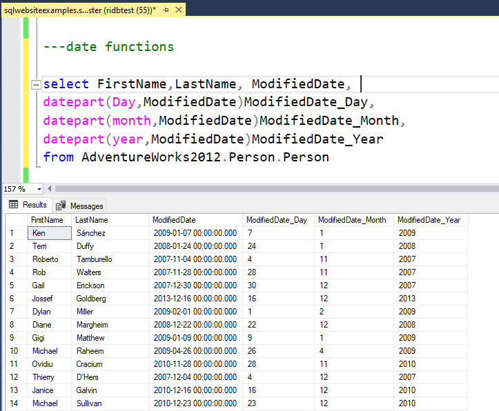

Examples on how we use these Functions
Here are some Screenshots with real time results of how you can use the Functions. If used in correct way , they can help is powerful SQL transformations , data mining , data analysis.
CURRENT_TIMESTAMP
GETDATE
GETUTCDATE
SYSDATETIME
DATEADD
DATEDIFF
DATEFROMPARTS
DATENAME
DATEPART
DAY
MONTH
YEAR
ISDATE
We will use [AdventureWorks2012].[Person].[Person] table for this Operator
SQL CURRENT_TIMESTAMP Function
CURRENT_TIMESTAMP function can be used to return the current date time according to the system.
We will use [AdventureWorks2012].[Person].[Person] table for this Operator
SQL GETDATE Function
GETDATE functioncan be used to return the current date time according to the system.
We will use [AdventureWorks2012].[Person].[Person] table for this Operator
SQL GETUTCDATE Function
GETUTCDATE function can be used to return the current UTC date time according to the system.
We will use [AdventureWorks2012].[Person].[Person] table for this Operator
SQL SYSDATETIME Function
SYSDATETIME function can be used to return the current date time according to the system.
We will use [AdventureWorks2012].[Person].[Person] table for this Operator
SQL DATEADD Function
DATEADD function can be used to ADD or SUBTRACT certain number of days , months or years for a given date. For Subtraction we just give the negative number.
We will use [AdventureWorks2012].[Person].[Person] table for this Operator
SQL DATEDIFF Function
DATEDIFF function can be used to get the difference between two sets or dates.
We will use [AdventureWorks2012].[Person].[Person] table for this Operator
SQL DATEFROMPARTS Function
DATEFROMPARTS function can be used create a date format values , from three different values .(Day, Month, Year).

We will use [AdventureWorks2012].[Person].[Person] table for this Operator
SQL DATENAME Function
DATENAME function can be used to return the YEAR/MONTH/DAY of Date Field.
Here are some syntax which we can use
We will use [AdventureWorks2012].[Person].[Person] table for this Operator
SQL DATEPART Function
DATEPART function can be used to return the DAY/MONTH/YEAR values from a date field.
We will use [AdventureWorks2012].[Person].[Person] table for this Operator
SQL DAY Function
DAY function can be used to return DAY value from a date field.

We will use [AdventureWorks2012].[Person].[Person] table for this Operator
SQL MONTH Function
MONTH function can be used to return MONTH value from a date field.
We will use [AdventureWorks2012].[Person].[Person] table for this Operator
SQL YEAR Function
YEAR function function can be used to return DAYEARY value from a date field.
We will use [AdventureWorks2012].[Person].[Person] table for this Operator
SQL ISDATE Function
ISDATE function can be used check if a certain field is a date field or not.
In below example we check if two fields are date fields or not. If its a date field 1 is returned, if its not a date field it returns 0.